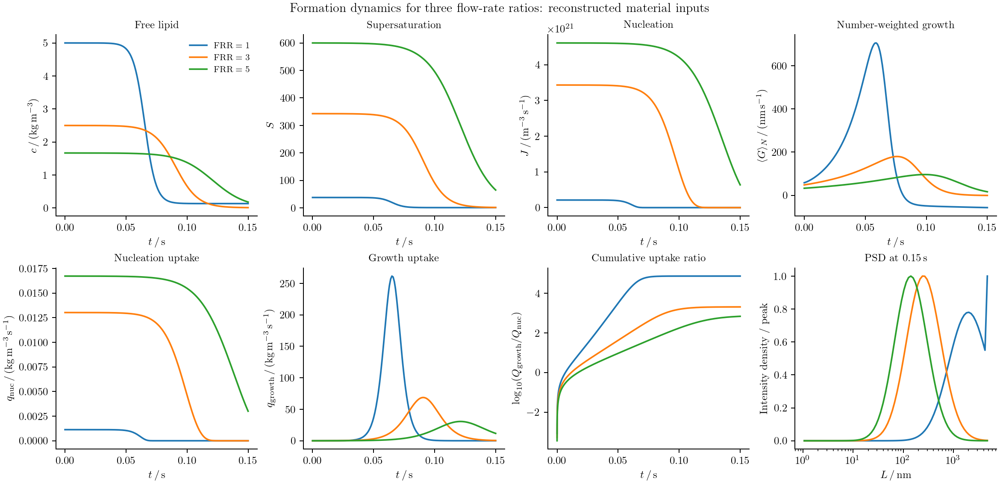
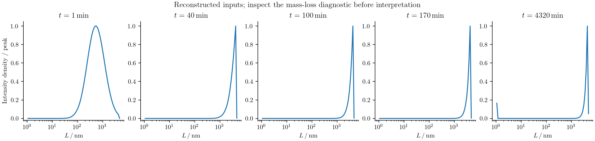
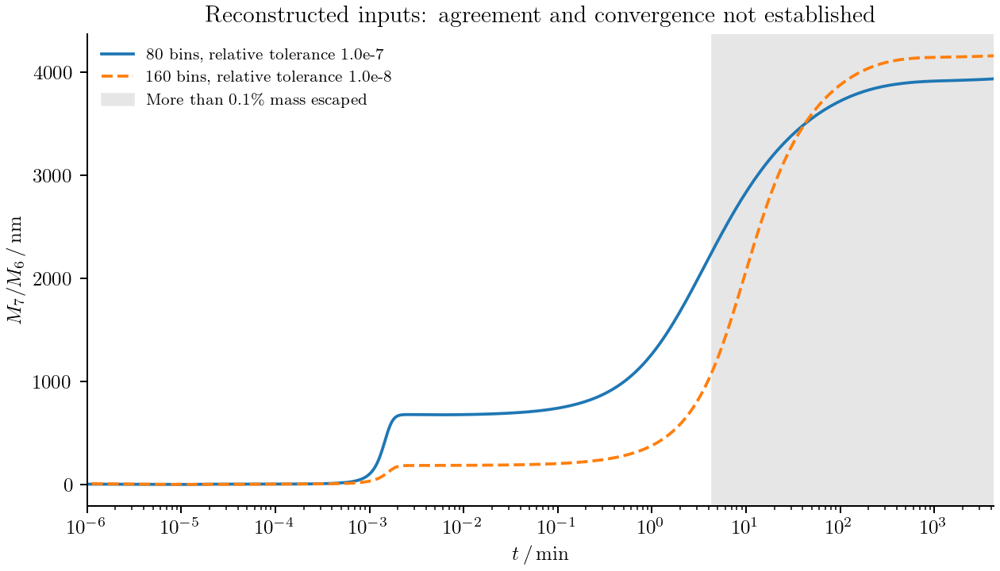
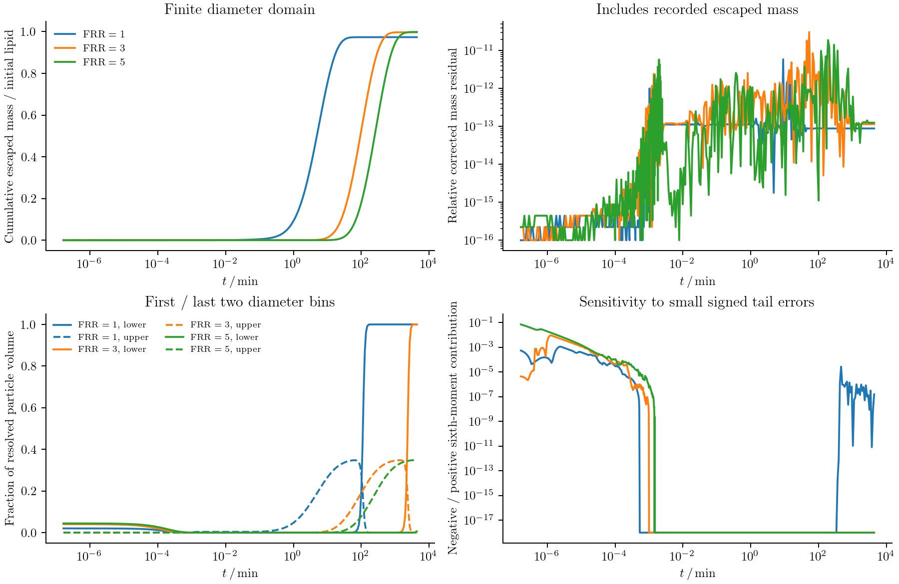
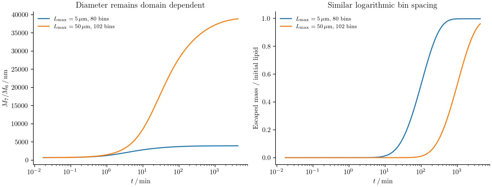
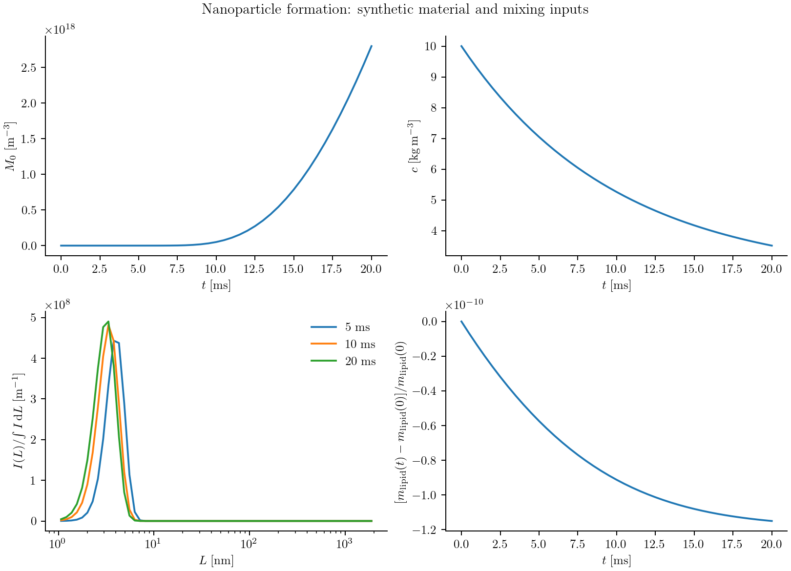

Lipid nanoparticle formation
Mixing an ethanolic lipid solution with water lowers lipid solubility. The resulting supersaturation creates particles, feeds their growth, and changes as lipid leaves solution. Coalescence then changes the size distribution even when little free lipid remains. Predicting a measured mean diameter requires following the distribution through both formation and subsequent incubation.
We model these processes with a diameter population balance coupled to free lipid. The formulation is based on Shin et al. (2025). The comparison of interest is the calculated distributions and mean-diameter history in Figure 4. We start with no particles and integrate formation and incubation to 4320 minutes. The paper and SI leave some material inputs and conventions unspecified. The runnable reconstruction below makes those assumptions explicit; its current results do not establish reproduction of the published curves.
Start with dissolved lipid
Let $f(L,t)$ be the number density per unit diameter and per unit process volume. Initially,
\[f(L,0)=0.\]
For instantaneous mixing, an organic-feed concentration of 10 mg/mL and an aqueous-to-organic flow-rate ratio of 3 give
\[c(0)=\frac{10}{1+3}=2.5\ \mathrm{kg\,m^{-3}},\qquad w=\frac{3}{1+3}=0.75,\]
where $w$ is the aqueous volume fraction. A concentration in mg/mL has the same numerical value in kg/m³. Empty particle bins therefore coexist with a nonzero dissolved concentration.
The recipe uses meters, seconds, kelvin, and kg/m³ internally. Its adapter sets these operating conditions and rejects a nonzero initial particle array:
using PopulationBalanceModels
include("examples/shin_lnp_long_time.jl")
import .ShinLNPLongTime
# Explicit reconstructed inputs, described below; requires the optional solver environment.
problem = ShinLNPLongTime.make_problem(bins=160,FRR=3.0)
@assert all(iszero,population(problem,problem.u0,:lnp))Write the population balance
The balance contains diameter transport, nucleation, and coalescence:
\[\frac{\partial f(L,t)}{\partial t} +\frac{\partial\!\left[G(L,t)f(L,t)\right]}{\partial L} =B_n(L,t)+B_c(L,t)-D_c(L,t).\]
Here $D_c$ is a positive removal rate. Each coalescence event removes both parents and creates one product. The signs in the calculation follow that event balance; the printed positive loss integral must be subtracted.
Define the supersaturation $S(t)=c(t)/C_\infty(w,T)$. Classical nucleation gives
\[L_c(t)=\frac{4\gamma V_m}{k_BT\ln S(t)},\qquad J(t)=A_n\exp\!\left[-\frac{16\pi\gamma^3V_m^2} {3(k_BT)^3[\ln S(t)]^2}\right],\quad S>1.\]
For $S\le1$, $J=0$. $V_m$ is volume per molecule, consistent with the Boltzmann constant $k_B$. Under a total-rate convention, the source is
\[B_n(L,t)=\frac{J(t)}{\sqrt{2\pi}\,\sigma_L} \exp\!\left[-\frac{(L-L_c(t))^2}{2\sigma_L^2}\right].\]
$\sigma_L$ is the physical spread in nucleation diameters. It is distinct from interfacial energy $\gamma$ and from numerical bin width. The source study prints an unnormalized Gaussian; selecting a total-rate source or a source-density amplitude is therefore an explicit input convention.
Growth and dissolution follow
\[G(L,t)=k_gL C_\infty(w,T)[S(t)-S^*(L,w,T)].\]
The material function $S^*$ sets equilibrium at each diameter. A negative velocity means dissolution; it is handled by the same signed face flux as growth.
Define the rate callbacks
The implementation is in examples/papers/cej2025_lnp.jl. The kinetic constants are passed as builder keywords and stored in problem.p: An=2.0e22, kg=11.88, kPEG=6.5e-6, and gamma=0.010. Other physical scales, including molecular volume and nucleation width, must be supplied.
Inside the builder, the rates are defined using the current free-lipid state and prescribed material properties:
supersaturation(ctx) = ctx.bulk.lipid / ctx.fields.Cinfinity
function J(p,t,ctx)
nucleation_rate(supersaturation(ctx),ctx.fields.T,p.gamma,p.Vm,p.An)
end
function growth_rate(L,p,t,ctx)
p.kg * L * ctx.fields.Cinfinity *
(supersaturation(ctx) - equilibrium_ratio(L,ctx.fields.w,ctx.fields.T))
end
function coalescence_kernel(L,M,p,t,ctx)
p.kPEG * attachment_without_peg(L,M,ctx.fields.w,ctx.fields.T) *
brownian_kernel(L,M,ctx.fields.T,ctx.fields.mu)
endnucleation_rate and brownian_kernel are recipe functions. equilibrium_ratio and attachment_without_peg are supplied material functions, captured by the builder. The latter excludes the separately applied PEG factor.
A moving critical diameter is supplied as a callback too. With nucleation_normalization=:total_rate, the source declaration is:
center = (p,t,ctx)->supersaturation(ctx)>1 ?
critical_length(supersaturation(ctx),ctx.fields.T,p.gamma,p.Vm) :
first(grid.centers)
source = GaussianNucleation(rate=J,center=center,
width=(p,t,ctx)->p.nucleation_width,truncation=:renormalize)The inactive source uses an unused finite centre when $S\le1$. Bin integration then deposits a narrow peak even if it lies between bin centres. Renormalization puts the full declared rate into the finite diameter range. With :density_amplitude, the recipe instead integrates the unnormalized exponential without redistributing its outside-domain tail. These conventions require consistent units for the amplitude; they are not interchangeable quadrature choices.
Coalesce in particle volume
The Brownian collision kernel is
\[K(L,M,t)=k_{\mathrm{PEG}}\alpha_{\mathrm{base}}(L,M,w,T) \frac{2k_BT(L+M)^2}{3\eta(w,T)LM}.\]
For $\ell=(L^3-M^3)^{1/3}$, its diameter-coordinate birth and loss terms are
\[B_c(L,t)=\frac{L^2}{2}\int_0^L \frac{K(\ell,M,t)f(\ell,t)f(M,t)}{\ell^2}\,dM,\]
\[D_c(L,t)=f(L,t)\int_0^\infty K(L,M,t)f(M,t)\,dM.\]
The numerical event calculation avoids evaluating this birth integral's endpoint directly. It combines parent volumes and deposits the product on fixed pivots. Specify volume addition on a diameter grid as follows:
model = PBMModel(
nucleation = source,
growth = Growth(rate=growth_rate),
coalescence = Aggregation(coalescence_kernel;
coordinate_map=AdditiveCoordinate(L->L^3,cbrt)),
dilution = Dilution(rate=(L,p,t,ctx)->ctx.fields.dilution),
)
methods = TermMethods(growth=MUSCL(),aggregation=FixedPivot())
operator = compile(model,grid;methods,bc=SizeBC(NoFlux(),NoFlux()))This is the general recipe's default MUSCL treatment. The long-time runner below explicitly selects Upwind() and records that choice in its input file. Its incubation curves therefore do not demonstrate a completed MUSCL solve.
A product diameter is $(L_1^3+L_2^3)^{1/3}$. FixedPivot preserves this volume and one product per event within the pivot range. Products outside that range raise an error by default. The size boundaries above are closed, including for dissolution; there is no extinction model at the lower diameter edge. Choose positive diameter limits and check that neither edge controls the result. The dilution hazard is zero for instantaneous mixing.
DLVO interactions and the collision kernel
DLVO theory modifies the chance that a Brownian encounter leads to attachment. It does not change the additive-volume deposition rule. Separate three steps: calculate an interaction energy, convert it into an attachment modifier, then multiply the Brownian encounter kernel. The recipe's callback attachment_without_peg(L,M,w,T) supplies the second step, excluding the PEG factor. The builder computes
\[K(L,M,t)=k_{\mathrm{PEG}}\,\alpha_{\mathrm{base}}(L,M,w,T)\, K_{\mathrm{Brownian}}(L,M,T,\eta).\]
The fixed-pivot implementation receives this final kernel in process-volume/time units. It does not evaluate an electrostatic potential internally. In particular, setting attachment_without_peg=(L,M,w,T)->1.0 disables the DLVO size dependence; it is a material assumption, not a default DLVO calculation.
Radii, gaps, and energy units
The population coordinate is diameter, while the supplement's energy laws use radii $r_1=L/2$ and $r_2=M/2$. Let $h>0$ be the surface-to-surface gap. The centre separation is $r_1+r_2+h$. The reported van der Waals contribution is
\[U_{\mathrm{vdW}}(h)=-\frac{A_H}{6}\left[ \frac{2r_1r_2}{h^2+2h(r_1+r_2)} +\frac{2r_1r_2}{h^2+2h(r_1+r_2)+4r_1r_2} +\ln\!\frac{h^2+2h(r_1+r_2)}{h^2+2h(r_1+r_2)+4r_1r_2} \right].\]
The recipe now provides vdw_energy(r1,r2,gap,hamaker) for this component in joules. Its far-field series avoids subtracting nearly equal terms. The Hamaker constant used in the supplement is $A_H=1.7\times10^{-22}$ J.
For an ideal electrolyte, the inverse Debye length is
\[\kappa=\sqrt{\frac{2e^2N_AI}{\epsilon_0\epsilon_r k_BT}},\]
where ionic strength $I$ is in mol/m³, not mol/L. debye_wavenumber implements this expression; $1/\kappa$ is the Debye length. The supplement calls $\kappa$ a length, but its formula has inverse-length units.
using PopulationBalanceModels
include(joinpath(pkgdir(PopulationBalanceModels),"examples","papers","cej2025_lnp.jl"))
import .CEJ2025LNP
kappa = CEJ2025LNP.debye_wavenumber(1.0,298.15,78.4) # 1 mol/m³ = 1 mmol/L
u = CEJ2025LNP.vdw_energy(25e-9,25e-9,1e-9,1.7e-22)
(debye_length_nm=1e9/kappa,vdw_energy_in_kBT=u/(CEJ2025LNP.kB*298.15))(debye_length_nm = 9.61370079831734, vdw_energy_in_kBT = -0.06613414365855674)Temperature 298.15 K and relative permittivity 78.4 are explicit illustrative values here. The mixture's ionic strength and permittivity must be supplied as functions of its composition and temperature for the actual material system. Electrostatic repulsion also needs a surface potential. The supplement uses 10 mV, adjusted from a reported zeta potential of 7 mV; surface and zeta potentials are not identical physical quantities.
Convert energy into attachment
An attachment calculation combines attraction and repulsion through $U(h)=U_{\mathrm{vdW}}(h)+U_{\mathrm{elec}}(h)$ and a stability integral. For example, one common no-hydrodynamic-correction convention is
\[W=(r_1+r_2)\int_0^\infty \frac{\exp[U(h)/(k_BT)]}{(r_1+r_2+h)^2}\,dh, \qquad \alpha_{\mathrm{base}}=\frac1W.\]
This convention has $W=1$ when $U=0$. A finite contact gap or a hydrodynamic mobility correction changes the integral and its normalization. It must be specified and tested explicitly. The main paper's printed attachment expression and the supplement's electrostatic prefactor leave reciprocal, separation, and concentration/energy conventions to be reconciled. The recipe does not silently substitute the expression above as a verified implementation of that paper. The recipe now supplies dlvo_attachment for this specified reconstruction, while keeping attachment_without_peg as an overridable input. It uses
\[U_{\mathrm{elec}}(h)=64\pi\epsilon_0\epsilon_r \frac{r_1r_2}{r_1+r_2}\left(\frac{k_BT}{e}\right)^2 \tanh^2\!\left(\frac{e\psi}{4k_BT}\right)\exp(-\kappa h).\]
This is a constant-potential Derjaguin approximation, without a hydrodynamic correction or a polymer-brush energy. The change of variable $q=(r_1+r_2)/(r_1+r_2+h)$ maps the stability integral to $0<q<1$. Gauss–Legendre quadrature and logarithmic summation evaluate it without an arbitrary exponential cap. Tests check the zero-energy limit, exchange of the two radii, ionic-strength units, and quadrature refinement. For fixed mixture composition and temperature, the long-time example tabulates attachment at all pivot pairs once, excluding the separately applied PEG factor.
The helper connects to the existing collision callback without changing volume deposition. For the reconstruction above, the wrapper is:
attachment_without_peg = (L,M,w,T)->CEJ2025LNP.dlvo_attachment(L/2,M/2;
temperature=T,ionic_strength=100*w,
relative_permittivity=24.3*(1-w)+78.4*w)Pass this function as the attachment_without_peg keyword to CEJ2025LNP.build. The linear permittivity and ionic-strength choices remain assumptions. The long-time runner evaluates this closure at grid pivot pairs once and reuses the table; delayed mixing would require updating the mixture-dependent attachment. Other closures must return a finite nonnegative dimensionless modifier and exclude $k_{\mathrm{PEG}}$. Check radius symmetry, energy and ionic-strength units, and gap-integral convergence. Physical cutoffs stay fixed when diameter bins are refined; exponential clipping does not establish convergence.
The fitted PEG factor is a phenomenological suppression of contact. The current recipe does not resolve a polymer-brush steric potential. Its material closures are fixed functions; fitting additional closure parameters requires making them explicit parameters in the physical rate callbacks rather than mutating captured constants during optimization.
Return particle uptake to the lipid balance
Nucleation and growth consume free lipid; volume-conserving coalescence does not consume it again. The fixed-volume balance is
\[\frac{dc(t)}{dt}=-\rho_p\frac{\pi}{6} \left[\left.\frac{dM_3(t)}{dt}\right|_{\mathrm{growth}} +\left.\frac{dM_3(t)}{dt}\right|_{\mathrm{nucleation}}\right], \qquad M_3(t)=\int_0^\infty L^3f(L,t)\,dL.\]
The builder obtains those rates from the actual discrete population terms:
exchange = ConservativeExchange(:lnp,:lipid,
(L,p,t,ctx)->p.rho*π/6*L^3;
mechanisms=(:growth,:nucleation))This closes $c+\rho_p\pi\sum_iL_i^3N_i/6$ for the resolved closed system. The builder places the exchange in PBMSystem and advances free lipid with the particle bins. Its delayed-mixing option also dilutes particles and free lipid at the same volume-growth rate; that option is a different operating condition.
Provide the material inputs
The adapter's inputs named tuple contains grid and these builder keywords:
| Input | Meaning and units |
|---|---|
temperature(t) | kelvin |
viscosity(w,T) | Pa s |
solubility(w,T) | $C_\infty$ in kg/m³, after conversion from any mole-fraction correlation |
equilibrium_ratio(L,w,T) | dimensionless $S^*$ |
attachment_without_peg(L,M,w,T) | dimensionless attachment modifier excluding $k_{\mathrm{PEG}}$ |
molecular_volume, particle_density | m³ per molecule and kg/m³ |
nucleation_width | diameter standard deviation in meters |
nucleation_normalization | :total_rate or :density_amplitude |
For example, a 200-bin logarithmic diameter grid is constructed with Grid1D(exp.(range(log(Lmin),log(Lmax);length=201));coordinate=:diameter). The positive limits must resolve the chosen material model.
The supplement supplies the DLVO expressions, $A_H=1.7\times10^{-22}$ J, and surface potential 10 mV. It is not a complete material-property table. The full-horizon runner, examples/shin_lnp_long_time.jl, therefore records the following choices:
| Quantity | Value or construction | Status |
|---|---|---|
| Feed, FRR, initial particles | 10 kg/m³ organic feed; FRR 1, 3, 5; no particles | Reported operating conditions |
| $A_n,k_g,k_{\mathrm{PEG}},\gamma$ | $2\times10^{22},11.88,6.5\times10^{-6},0.010$ in the recipe's SI units | Reported kinetic inputs |
| Buffer | 0.1 mol/L aqueous buffer; mixture ionic strength set to $100w$ mol/m³ | Reported buffer concentration; ideal-mixture ionic-strength assumption |
| Temperature, molecular volume, particle density | 298.15 K, $5\times10^{-28}$ m³/molecule, 1000 kg/m³ | Reconstruction assumptions |
| Nucleation spread | 1 nm, normalized total-rate Gaussian | Reconstruction and source-unit convention |
| Mixture viscosity and permittivity | Linear interpolation of 1.2/0.89 mPa s and 24.3/78.4 | Reconstruction assumptions |
| Solubility | Log-linear mass correlation through approximate initial supersaturations reported for FRR 3 and 5 | Inferred from model outputs, not independent solubility data |
| Equilibrium | Kelvin ratio $\exp[4\gamma V_m/(k_BTL)]$ | Explicit curvature closure |
| Attachment | Inverse stability integral with the electrostatic law above | Specified reconstruction of unresolved printed conventions |
Specifically, $C_\infty(0.75)=(7/4)/240$ and $C_\infty(5/6)=(10/6)/600$ kg/m³ are inferred from the paper's approximate initial supersaturation statements. Interpolation is linear in $\log C_\infty$. This is not the paper's independently specified mole-fraction correlation. No parameter is calibrated to the Figure 4 diameter curve. These distinctions limit what agreement with that curve could demonstrate.
Integrate formation and incubation
The runner exports 1, 40, 100, 170, and 4320 minutes, with additional dense outputs during the first 0.15 s. The final time is 259200 seconds. Upwind transport is the baseline for this stiff calculation; the mesh and time-method comparison elsewhere does not establish accuracy for this distribution. make_problem(scheme=MUSCL()) selects limited growth instead.
Install the optional solver into a separate working environment:
using Pkg
Pkg.activate("/path/to/lnp_environment")
Pkg.develop(path="/path/to/PopulationBalanceModels.jl")
Pkg.add(["SciMLBase","OrdinaryDiffEqRosenbrock","ADTypes"])Run the full reconstruction and render the figures:
julia --project=/path/to/lnp_environment examples/shin_lnp_long_time.jl 80 1e-7 docs/src/assets/shin_case
julia --project=/path/to/lnp_environment examples/shin_lnp_long_time.jl 160 1e-8 docs/src/assets/shin_case/refinement 1,3
python docs/benchmarks/plot_lnp_dynamics.py --comparison docs/src/assets/shin_case/refinement --usetex
julia --project=docs docs/make.jlstiff_solve scales bin numbers by the number concentration associated with a 100 nm particle and scales bulk variables by the initial mixed lipid concentration. Rodas5P then controls errors on these scaled states using a finite-difference Jacobian. This scaling does not alter the equations. It avoids asking one unscaled absolute tolerance to control both particle counts near $10^{20}$ and concentrations near one. Output values are not clipped. max_evaluations bounds the number of RHS calls (default two million). A 120-bin MUSCL/Rodas5P attempt was stopped for cost after a progress report of 300000 RHS calls at about 1882 s; it did not reach the full horizon. This is not evidence of instability, and no completed MUSCL incubation curve is claimed. The adapter checks solve status, requested output times, finite values, and substantial negative concentrations. Small tail errors can still matter greatly for intensity moments, which require their own refinement checks.
Set track_consumption=true in the general builder to integrate cumulative nucleation uptake, growth uptake, and escaped collision-product mass alongside free lipid. The first two reuse the actual discrete term derivatives; they do not consume lipid a second time. For instantaneous mixing and zero initial particles, the numerical balances are
\[c(t)+Q_{\mathrm{nuc}}(t)+Q_{\mathrm{growth}}(t)=c(0),\]
\[c(t)+\rho_p\frac{\pi}{6}M_3(t)+Q_{\mathrm{escaped}}(t)=c(0).\]
Q_growth is signed if dissolution returns lipid. The current example uses overflow=:discard and records that lost mass explicitly. Closed diameter faces also retain shrinking particles at the lower edge; no extinction law is supplied. Large edge fractions or escaped mass invalidate interpretation as an effectively unbounded size calculation even when the corrected numerical mass balance closes.
Calculate the observation
Large particles contribute disproportionately to scattering. The reported intensity weighting and mean diameter are
\[I(L,t)=L^6f(L,t),\qquad \overline L(t)=\frac{\int_0^\infty L^7f(L,t)\,dL} {\int_0^\infty L^6f(L,t)\,dL}.\]
For example, the recipe evaluates the mean as
N = population(problem,solution.u[end],:lnp)
grid = problem.operator.system.populations.lnp.grid
mean_diameter = moment(grid,N,7) / moment(grid,N,6)It is undefined for the empty initial state. The exporter omits that point from the mean-time plot and writes both area-normalized and unit-peak intensity densities. The distribution panels use unit-peak scaling, while the mean-time panel uses minutes and nanometers. Logarithmic-bin counts are divided by their individual widths before plotting a density.
Formation profiles and long-time checks

The panels show free lipid, supersaturation, nucleation rate, number-weighted growth rate, both lipid-uptake rates, the ratio of cumulative uptake, and the intensity distribution at 0.15 s. The cumulative ratio is distinct from the instantaneous rate ratio, which becomes undefined when both rates vanish. These are computed model outputs; no experimental points have been invented.


The displayed formation profiles and PSD snapshots use the 80-bin run. The FRR=3 time-history comparison retains both that run at relative tolerance $10^{-7}$ and the 160-bin run at $10^{-8}$. The finer checks cover FRR=1 and FRR=3; FRR=5 has the baseline run. Changing the mesh and tolerance together is a combined check, not a measurement of either error separately. The gray region marks escaped particle mass above 0.1% of initial lipid. The current curves disagree with the published approximately 120–200 nm incubation trend. They are a diagnostic of the stated reconstruction, not a reproduced Figure 4.

The corrected mass residual checks the implementation's accounting. It does not validate the material closures or repair loss through an insufficient size domain. Substantial escaped mass and edge accumulation occur in this run; its late-time diameter should not be interpreted as a converged physical prediction. Before fitting parameters, the size domain, transport resolution, lower-boundary physics, solubility, and attachment/equilibrium conventions must be resolved. A separate FRR=3 run increases the upper diameter limit from 5 to 50 µm and uses 102 bins to approximately preserve logarithmic bin spacing. The comparison starts at one second; the earlier near-empty intensity moments are checked in the separate signed-tail diagnostic. The predicted late-time intensity mean increases from about 3.94 to 38.9 µm, while escaped mass is still about 96% of initial lipid. The output is therefore strongly domain dependent. A finer mesh inside the original domain does not fix that problem.

This check is reproducible with the same material reconstruction:
problem = ShinLNPLongTime.make_problem(bins=102,FRR=3.0,
diameter_limits=(1e-9,50e-6))
times = ShinLNPLongTime.figure4_saveat()
ShinLNPLongTime.run_case(problem;saveat=times,
solver=(p,t)->ShinLNPLongTime.stiff_solve(p,t),
psd_times=60 .*collect(ShinLNPLongTime.FIGURE4_MINUTES),
provenance=ShinLNPLongTime.provenance * "\nEnlarged domain: 1 nm to 50 µm; 102 bins; FRR=3.\n",
output="docs/src/assets/shin_case/domain_check/frr3")The fourth panel checks negative contributions to the sixth moment, relative to its positive contributions. Tiny signed errors in nearly empty bins can affect intensity before appreciable particles form, despite an acceptable total-number error. The displayed floor of $10^{-18}$ only makes zero diagnostic values visible; it does not alter a state. The raw histories, selected PSD snapshots, input provenance, and verification table accompany the plots.
Numerical illustration of the coupling
The retained run below uses the explicit synthetic inputs in examples/lipid_nanoparticle_demo.jl: delayed mixing with $\tau=0.01$ s, constant viscosity $10^{-3}$ Pa s, a demonstration solubility correlation, $S^*=1$, and $\alpha_{\mathrm{base}}=1$. It starts with zero particles. The source and coupling are evaluated by the same recipe, but these choices neither exercise a DLVO barrier nor reproduce the 4320-minute model curves.

The panels use real exported simulation data from docs/benchmarks/diagnostics/lnp_demo/; their provenance remains alongside the CSVs. They illustrate the numerical coupling over 20 ms. Re-render with python docs/benchmarks/plot_case_studies.py illustrations --usetex. The full-horizon Figure 4 exporter above is kept separate from this illustration.
Complete runnable script
The code below is read from the example source during the documentation build. Run it from the repository root using the environment described above.
examples/shin_lnp_long_time.jl
"""
Formation and incubation with explicitly reconstructed material inputs.
Run in an environment containing the local package, OrdinaryDiffEqRosenbrock
and ADTypes. No parameters are fitted to Figure 4 diameter curves.
julia --project=WORKENV examples/shin_lnp_long_time.jl [bins=80] [reltol=1e-7] [output] [FRRs=1,3,5]
"""
module ShinLNPLongTime
using PopulationBalanceModels, LinearAlgebra
using OrdinaryDiffEqRosenbrock, ADTypes
import SciMLBase
include("shin_lnp_reproduction.jl")
using .ShinLNPReproduction
const material=ShinLNPReproduction.CEJ2025LNP
"""Mass-solubility interpolation inferred from two approximate S values reported in the text, not independent solubility measurements."""
function reconstructed_solubility(w,T)
# FRR=3, organic=7 kg/m³, S≈240; FRR=5, organic=10 kg/m³, S≈600.
c3=(7/4)/240; c5=(10/6)/600
exp(log(c3)+(w-3/4)/(5/6-3/4)*log(c5/c3))
end
function make_problem(;bins=120,FRR=3.0,scheme=Upwind(),diameter_limits=(1e-9,5e-6),equilibrium=:kelvin)
grid=Grid1D(exp.(range(log(first(diameter_limits)),log(last(diameter_limits));length=bins+1));coordinate=:diameter)
equilibrium in (:kelvin,:flat) || throw(ArgumentError("equilibrium must be :kelvin or :flat"))
w=FRR/(1+FRR); T=298.15
# These mixture-property correlations and Vm/rho are assumptions. The SI
# supplies Hamaker and surface potential, but not a complete property table.
permittivity=24.3*(1-w)+78.4*w
mu=1.2e-3*(1-w)+0.89e-3*w
table=Matrix{Float64}(undef,bins,bins)
quadrature=material.dlvo_quadrature(128)
for j in 1:bins,i in 1:j
value=material.dlvo_attachment(grid.centers[i]/2,grid.centers[j]/2;
temperature=T,ionic_strength=100w,relative_permittivity=permittivity,quadrature)
table[i,j]=table[j,i]=value
end
println("DLVO table ready; range=",extrema(table));flush(stdout)
indices=Dict(x=>i for (i,x) in enumerate(grid.centers))
attachment=(L,M,w,T)->table[indices[L],indices[M]]
figure4_problem(;grid,FRR,temperature=t->T,viscosity=(w,T)->mu,
solubility=reconstructed_solubility,
equilibrium_ratio=(L,w,T)->equilibrium===:kelvin ? material.kelvin_ratio(L,T,0.010,5e-28) : 1.0,
attachment_without_peg=attachment,molecular_volume=5e-28,particle_density=1000.0,
nucleation_width=1e-9,nucleation_normalization=:total_rate,
overflow=:discard,track_consumption=true,scheme)
end
"""Scale particle counts and bulk concentrations before stiff integration; return physical states without clipping."""
function stiff_solve(problem,times;reltol=1e-7,max_evaluations=2_000_000)
max_evaluations isa Integer && max_evaluations>0 || throw(ArgumentError("max_evaluations must be positive"))
concentration=bulk(problem,problem.u0,:lipid)
number_scale=concentration/(problem.p.rho*π/6*(100e-9)^3)
scales=fill(concentration,length(problem.u0))
scales[problem.operator.ranges.lnp].=number_scale
evaluations=Ref(0)
function scaled_rhs!(dv,v,p,t)
rhs!(dv,v.*scales,problem.operator,p,t)
dv./=scales
evaluations[]+=1
evaluations[]<=max_evaluations || throw(NumericalFailure("LNP RHS evaluation budget exceeded; inspect method, tolerances and state scales"))
if evaluations[]%100000==0
println("RHS evaluations=",evaluations[],"; t=",t," s");flush(stdout)
end
nothing
end
scaled=SciMLBase.ODEProblem(scaled_rhs!,problem.u0./scales,problem.tspan,problem.p)
println("Starting scaled stiff integration");flush(stdout)
result=SciMLBase.solve(scaled,Rodas5P(autodiff=AutoFiniteDiff());saveat=times,
save_everystep=false,reltol,abstol=reltol*1e-3,maxiters=10^7)
SciMLBase.successful_retcode(result) || error("LNP integration failed: $(result.retcode)")
println("solver statistics: ",result.destats)
(;t=result.t,u=[v.*scales for v in result.u],stats=result.destats)
end
const provenance="""
Shin et al., Chem Eng J (2025), DOI 10.1016/j.cej.2025.167786, and 2-page SI.
Targets: Figure 4 model panels (FRR=3), Figure 8 (FRR=1,3,5); no experimental data.
Zero particles; organic lipid 10 kg/m³; instantaneous mixing; 4320 min = 259200 s.
Paper/SI inputs: An=2e22, kg=11.88, kPEG=6.5e-6, gamma=.010 N/m,
Hamaker=1.7e-22 J, potential=.010 V, aqueous buffer .1 mol/L.
RECONSTRUCTION ASSUMPTIONS: T=298.15 K; Vm=5e-28 m³/molecule; rho=1000 kg/m³;
nucleation sigma=1 nm; total-rate Gaussian with renormalized domain truncation;
Kelvin equilibrium ratio; linearly mixed permittivity (ethanol 24.3/water 78.4)
and viscosity (1.2/.89 mPa s); buffer ionic strength=100*w mol/m³.
Solubility is a log-linear mass correlation inferred from reported approximate
initial supersaturations S≈240 (FRR3, organic7) and S≈600 (FRR5, organic10).
It is not an independent material-property measurement or the paper's fitted
mole-fraction correlation. DLVO is the specified constant-potential Derjaguin
reconstruction, inverse no-hydrodynamic Fuchs integral, not a verified literal
transcription of the SI electrostatic prefactor / main-paper attachment formula.
No calibration to diameter curves. Upwind growth, fixed-pivot volume addition,
closed size boundaries; discarded collision volume integrated as escaped_lipid.
These results test a reconstructed model; they do not establish reproduction.
"""
function run(;bins=80,reltol=1e-7,FRRs=(1.,3.,5.),output=joinpath(@__DIR__,"..","docs","src","assets","shin_case"))
isempty(FRRs) && throw(ArgumentError("supply at least one flow-rate ratio"))
times=sort!(unique(vcat(figure4_saveat(),collect(range(0,0.15;length=151)))))
for FRR in FRRs
println("Building FRR=$FRR, bins=$bins");flush(stdout)
problem=make_problem(;bins,FRR)
label=isinteger(FRR) ? string(Int(FRR)) : replace(string(FRR),'.'=>'p')
folder=joinpath(output,"frr$label")
elapsed=@elapsed solution=run_case(problem;saveat=times,
solver=(p,t)->stiff_solve(p,t;reltol),provenance=provenance*"\nFRR=$FRR; bins=$bins; reltol=$reltol\n",
psd_times=vcat(0.,.15,60 .*collect(FIGURE4_MINUTES)),output=folder)
println("Finished FRR=$FRR in $elapsed s; final mean nm=",1e9*material.paper_intensity_mean(
problem.operator.system.populations.lnp.grid,population(problem,solution.u[end],:lnp)))
flush(stdout)
end
end
if abspath(PROGRAM_FILE)==@__FILE__
run(;bins=isempty(ARGS) ? 80 : parse(Int,ARGS[1]),
reltol=length(ARGS)<2 ? 1e-7 : parse(Float64,ARGS[2]),
FRRs=length(ARGS)<4 ? (1.,3.,5.) : parse.(Float64,split(ARGS[4],',')),
output=length(ARGS)<3 ? joinpath(@__DIR__,"..","docs","src","assets","shin_case") : abspath(ARGS[3]))
end
end
examples/shin_lnp_reproduction.jl
module ShinLNPReproduction
using PopulationBalanceModels
include("papers/cej2025_lnp.jl")
using .CEJ2025LNP
export FIGURE4_MINUTES, figure4_saveat, figure4_problem, run_case
const FIGURE4_MINUTES=(1.0,40.0,100.0,170.0,4320.0)
function figure4_saveat()
snapshots=60 .*collect(FIGURE4_MINUTES)
logtimes=exp.(range(log(1e-5),log(last(snapshots));length=300))
logtimes[end]=last(snapshots) # avoid exp(log(tf)) rounding past the horizon
sort!(unique(vcat(0.0,logtimes,snapshots)))
end
"""Figure 4 setup: no particles initially, nonzero dissolved lipid, seconds internally."""
function figure4_problem(;grid,kwargs...)
inputs=(;kwargs...)
if haskey(inputs,:initial_distribution)
all(iszero,inputs.initial_distribution) || throw(ArgumentError("Figure 4 starts with zero particles"))
end
defaults=(initial_lipid=10.0,FRR=3.0,tau=0.0,tspan=(0.0,4320*60.0))
options=merge(defaults,inputs,(initial_distribution=zeros(length(grid)),))
CEJ2025LNP.build(;grid,options...)
end
"""
run_case(problem; dt, saveat, provenance, output)
Export time histories and number/intensity PSDs for a supplied Shin-model
problem. `provenance` records the input source, figure target, and unresolved
conventions. Exported intensity is a normalized density per meter, not a raw
count per logarithmic bin. This routine does not certify paper reproduction.
"""
function run_case(problem;dt=nothing,saveat,provenance,output,solver=nothing,psd_times=nothing)
isempty(strip(provenance)) && throw(ArgumentError("record input provenance and figure target"))
if solver===nothing
dt===nothing && throw(ArgumentError("supply dt for SSPRK or solver=(problem,times)->solution"))
solution=simulate(problem;dt,saveat)
else
# Adapter may use a stiff SciML solver in a separate working environment.
solution=solver(problem,collect(saveat))
length(solution.t)==length(saveat) && all(isapprox.(solution.t,collect(saveat);rtol=1e-12,atol=1e-12)) ||
throw(ArgumentError("external solver must return the requested output times"))
all(u->all(isfinite,u),solution.u) || throw(NumericalFailure("external solver returned nonfinite states"))
for u in solution.u
N=population(problem,u,:lnp)
minimum(N)>=-1e-12*max(1.0,maximum(N)) || throw(NumericalFailure("external solver returned negative particle concentrations"))
bulk(problem,u,:lipid)>=-1e-12 || throw(NumericalFailure("external solver returned negative free lipid"))
end
end
grid=problem.operator.system.populations.lnp.grid
mkpath(output)
open(joinpath(output,"history.csv"),"w") do io
println(io,"time,number,free_lipid,intensity_mean_m,material_element_lipid,supersaturation,nucleation_rate,critical_diameter_m,number_mean_growth_m_s,nucleation_uptake_kg_m3_s,growth_uptake_kg_m3_s,overflow_kg_m3_s,nucleated_lipid,grown_lipid,escaped_lipid,lower_volume_fraction,upper_volume_fraction,negative_number_fraction,negative_volume_fraction,negative_intensity_fraction")
for (t,u) in zip(solution.t,solution.u)
N=population(problem,u,:lnp); c=bulk(problem,u,:lipid)
mean=sum(N)>0 ? paper_intensity_mean(grid,N) : NaN
w=aqueous_fraction(t,problem.p.FRR,problem.p.tau)
material=(c+problem.p.rho*π/6*moment(grid,N,3))/(1-w)
fields=problem.operator.system.fields(problem.p,t)
state=stateview(problem,u)
op=problem.operator.system.populations.lnp
ctx=(;grid,operator=op,N,cell=1,fields,bulk=state.bulk)
S=c/fields.Cinfinity
J=nucleation_rate(S,fields.T,problem.p.gamma,problem.p.Vm,problem.p.An)
Lc=critical_length(S,fields.T,problem.p.gamma,problem.p.Vm)
term=only(filter(item->item.term isa Growth,op.prepared)).term
G=sum(N)>0 ? sum(N[i]*term.rate(grid.centers[i],problem.p,t,ctx) for i in eachindex(N))/sum(N) : NaN
rates=mechanism_rates(op,N,problem.p,t,fields,state.bulk)
accumulator(name)=hasproperty(state.bulk,name) ? getproperty(state.bulk,name) : NaN
volumes=grid.centers.^3 .* N; totalvolume=sum(volumes)
edge_bins=min(2,length(grid))
lower=totalvolume>0 ? sum(volumes[1:edge_bins])/totalvolume : 0.0
upper=totalvolume>0 ? sum(volumes[end-edge_bins+1:end])/totalvolume : 0.0
negative_fraction(weights)=sum(max.(weights,0))>0 ? -sum(min.(weights,0))/sum(max.(weights,0)) : 0.0
println(io,join((t,sum(N),c,mean,material,S,J,Lc,G,rates.nucleation,rates.growth,rates.overflow,
accumulator(:nucleated_lipid),accumulator(:grown_lipid),accumulator(:escaped_lipid),lower,upper,
negative_fraction(N),negative_fraction(volumes),negative_fraction(grid.centers.^6 .*N)),','))
end
end
open(joinpath(output,"psd.csv"),"w") do io
println(io,"time,diameter_m,number_density_per_m,intensity_density_per_m,intensity_peak_scaled")
for (t,u) in zip(solution.t,solution.u)
psd_times===nothing || any(s->isapprox(t,s;rtol=1e-12,atol=1e-12),psd_times) || continue
N=population(problem,u,:lnp);weights=grid.centers.^6 .*N;total=sum(weights)
peak=maximum(weights./grid.widths)
for i in 1:length(grid)
intensity=total>0 ? weights[i]/(total*grid.widths[i]) : NaN
println(io,join((t,grid.centers[i],N[i]/grid.widths[i],intensity,peak>0 ? weights[i]/grid.widths[i]/peak : NaN),','))
end
end
end
write(joinpath(output,"inputs.txt"),provenance*"\nJulia $(VERSION); dt=$(dt); external_solver=$(solver!==nothing); saveat=$(collect(saveat))\n")
solution
end
# An input script must return (inputs=..., dt=..., saveat=..., provenance=...).
# Its `inputs` named tuple contains explicit keywords for CEJ2025LNP.build.
# Run: julia --project=WORKENV examples/shin_lnp_reproduction.jl /path/to/inputs.jl
if abspath(PROGRAM_FILE)==@__FILE__
isempty(ARGS) && error("Supply an input .jl file returning (inputs,dt,saveat,provenance). See the LNP manual; no paper inputs are silently substituted.")
config=Base.include(@__MODULE__,abspath(first(ARGS)))
problem=figure4_problem(;config.inputs...)
output=length(ARGS)>1 ? abspath(ARGS[2]) : joinpath(@__DIR__,"..","docs","src","assets","shin_case")
run_case(problem;dt=get(config,:dt,nothing),saveat=get(config,:saveat,figure4_saveat()),
provenance=config.provenance,solver=get(config,:solver,nothing),output)
end
end
examples/papers/cej2025_lnp.jl
module CEJ2025LNP
using PopulationBalanceModels
using LinearAlgebra
export build,loglinear_mole_solubility,critical_length,nucleation_rate,
brownian_kernel,kelvin_ratio,paper_intensity_mean,aqueous_fraction,
debye_wavenumber,vdw_energy,dlvo_attachment,dlvo_quadrature,mechanism_rates
const kB=1.380649e-23
const NA=6.02214076e23
const elementary_charge=1.602176634e-19
const vacuum_permittivity=8.8541878128e-12
"""Inverse Debye length (m⁻¹) for ionic strength I in mol/m³, kelvin, and dimensionless relative permittivity."""
function debye_wavenumber(I,T,relative_permittivity)
isfinite(I) && I>=0 && all(x->isfinite(x) && x>0,(T,relative_permittivity)) ||
throw(ArgumentError("invalid ionic strength, temperature or permittivity"))
sqrt(2elementary_charge^2*NA*I/(vacuum_permittivity*relative_permittivity*kB*T))
end
"""
dlvo_attachment(r1,r2; temperature, ionic_strength, relative_permittivity,
potential=0.010, hamaker=1.7e-22, order=128)
Dimensionless inverse Fuchs stability integral, without hydrodynamic correction
or PEG. Uses a constant-potential Derjaguin approximation in SI units. This is
an explicitly specified reconstruction, not a transcription of the ambiguous
electrostatic prefactor printed in the Shin supplement. `ionic_strength` is
mol/m³, radii are meters, potential is volts. No contact cutoff is introduced.
"""
function dlvo_quadrature(order)
order isa Integer && order>=8 || throw(ArgumentError("quadrature order must be at least eight"))
pair=eigen(SymTridiagonal(zeros(order),[j/sqrt(4j^2-1) for j in 1:order-1]))
(;nodes=(pair.values.+1)./2,weights=pair.vectors[1,:].^2)
end
function dlvo_attachment(r1,r2;temperature,ionic_strength,relative_permittivity,
potential=0.010,hamaker=1.7e-22,order=128,quadrature=dlvo_quadrature(order))
all(x->isfinite(x) && x>0,(r1,r2,temperature,relative_permittivity)) ||
throw(ArgumentError("positive radii, temperature and permittivity required"))
isfinite(potential) && isfinite(hamaker) && hamaker>=0 || throw(ArgumentError("invalid potential or Hamaker constant"))
order isa Integer && order>=8 || throw(ArgumentError("quadrature order must be at least eight"))
kappa=debye_wavenumber(ionic_strength,temperature,relative_permittivity)
# q=(r1+r2)/(r1+r2+h) maps the infinite stability integral to [0,1].
q=quadrature.nodes;weights=quadrature.weights
prefactor=64π*vacuum_permittivity*relative_permittivity*(r1*r2/(r1+r2))*
(kB*temperature/elementary_charge)^2*tanh(elementary_charge*potential/(4kB*temperature))^2
logterms=map(eachindex(q)) do i
gap=(r1+r2)*(1-q[i])/q[i]
U=vdw_energy(r1,r2,gap,hamaker)+prefactor*exp(-kappa*gap)
log(weights[i])+U/(kB*temperature)
end
peak=maximum(logterms)
exp(-(peak+log(sum(exp.(logterms.-peak)))))
end
"""Unequal-sphere van der Waals energy in joules. Radii and positive surface gap are meters; Hamaker constant is joules. No electrostatic or steric energy is included."""
function vdw_energy(r1,r2,gap,hamaker)
all(x->isfinite(x) && x>0,(r1,r2,gap)) && isfinite(hamaker) && hamaker>=0 ||
throw(ArgumentError("radii and gap must be positive; Hamaker constant nonnegative"))
z=4r1*r2/(gap*(gap+2(r1+r2)))
bracket=if z<0.1
# Avoid cancellation of the first two asymptotic orders at large gap.
polynomial=zero(z)
for j in 16:-1:0
polynomial=-z*polynomial+(j+1)/(2(j+3))
end
z^3*polynomial
else
z/2+z/(2(1+z))-log1p(z)
end
-hamaker/6*bracket
end
loglinear_mole_solubility(xwater,xethanol,w)=exp(w*log(xwater)+(1-w)*log(xethanol))
critical_length(S,T,gamma,Vm)=S>1 ? 4gamma*Vm/(kB*T*log(S)) : Inf
nucleation_rate(S,T,gamma,Vm,An)=S>1 ? An*exp(-16π*gamma^3*Vm^2/(3*(kB*T)^3*log(S)^2)) : 0.0
brownian_kernel(L,M,T,mu)=2kB*T*(L+M)^2/(3mu*L*M)
kelvin_ratio(L,T,gamma,Vm)=exp(4gamma*Vm/(kB*T*L))
function aqueous_fraction(t,FRR,tau)
FRR>=0 && tau>=0 || throw(ArgumentError("FRR and mixing time must be nonnegative"))
tau==0 ? FRR/(FRR+1) : FRR/(FRR+1)*(-expm1(-t/tau))
end
"""Eq. 3 in the final paper: M7/M6, kept under an explicit paper-specific name."""
function paper_intensity_mean(grid,N)
denominator=moment(grid,N,6)
denominator>0 || throw(ArgumentError("an empty distribution has no mean diameter"))
moment(grid,N,7)/denominator
end
"""
Main-paper LNP mechanisms, coupled depletion, prescribed mixing and DLS output.
All lengths are meters; time is seconds; concentrations are kg/m^3.
Required closures/inputs prevent hidden assumptions:
solubility(w,T): C_infinity in kg/m^3 (not mole fraction).
equilibrium_ratio(L,w,T): S_star for growth/dissolution.
attachment_without_peg(L,M,w,T): dimensionless kernel modifier excluding kPEG.
viscosity(w,T): Pa s; temperature(t): kelvin.
molecular_volume: per molecule in m^3; particle_density: kg/m^3.
nucleation_width: meters, separate from gamma in N/m.
nucleation_normalization: :total_rate or :density_amplitude.
The paper's printed death sign, alpha formula, Gaussian normalization and SI
energy convention need reconciliation with author code. This recipe applies
physical parent loss, uses a user-supplied attachment law and makes the source
normalization explicit. It does not assert reproduction of published figures.
"""
function build(;grid,initial_lipid,FRR,tau,temperature,viscosity,solubility,
equilibrium_ratio,attachment_without_peg,molecular_volume,
particle_density,nucleation_width,nucleation_normalization,
tspan,scheme=MUSCL(),initial_distribution=zeros(length(grid)),
An=2.0e22,kg=11.88,kPEG=6.5e-6,gamma=0.010,
overflow=:error,track_consumption=false)
grid.coordinate in (:diameter,:length) || throw(ArgumentError("CEJ recipe requires a length/diameter grid in meters"))
all(x->isfinite(x) && x>0,(initial_lipid,molecular_volume,particle_density,nucleation_width,gamma)) ||
throw(ArgumentError("concentration and physical input scales must be positive"))
first(tspan)==0 || throw(ArgumentError("the mixing recipe starts at t=0; supply a custom system for later initialization"))
p=(An=An,kg=kg,kPEG=kPEG,gamma=gamma,FRR=FRR,tau=tau,
Vm=molecular_volume,rho=particle_density,nucleation_width=nucleation_width)
function fields(p,t)
w=aqueous_fraction(t,p.FRR,p.tau)
T=temperature(t); mu=viscosity(w,T); C=solubility(w,T)
all(x->isfinite(x) && x>0,(T,mu,C)) || throw(ArgumentError("invalid temperature, viscosity or solubility"))
dw=p.tau==0 ? 0.0 : p.FRR/(p.FRR+1)*exp(-t/p.tau)/p.tau
# Volume growth of a material element: V/Vorganic=1/(1-w).
(;w,T,mu,Cinfinity=C,dilution=dw/(1-w))
end
supersaturation(ctx)=ctx.bulk.lipid/ctx.fields.Cinfinity
function J(p,t,ctx)
nucleation_rate(supersaturation(ctx),ctx.fields.T,p.gamma,p.Vm,p.An)
end
center=(p,t,ctx)->critical_length(supersaturation(ctx),ctx.fields.T,p.gamma,p.Vm)
# At S<=1, J is zero and the source residual returns before evaluating its
# center. Use a finite unused center so the integral itself remains defined.
finite_center=(p,t,ctx)->supersaturation(ctx)>1 ? center(p,t,ctx) : first(grid.centers)
gaussian=GaussianNucleation(J;center=finite_center,
width=(p,t,ctx)->p.nucleation_width,truncation=:renormalize)
nucleation_normalization in (:total_rate,:density_amplitude) ||
throw(ArgumentError("invalid nucleation normalization"))
# Preserve the legacy unnormalized exp(-z²/2) amplitude convention explicitly.
physical=GaussianNucleation(J;center=finite_center,
width=(p,t,ctx)->p.nucleation_width,truncation=:physical)
source=nucleation_normalization===:total_rate ? gaussian :
IntegratedNucleation(J,(lo,hi,p,t,ctx)->sqrt(2π)*p.nucleation_width*
physical.fraction(lo,hi,p,t,ctx);normalization=:density_amplitude)
function growth_rate(L,p,t,ctx)
p.kg*L*ctx.fields.Cinfinity*
(supersaturation(ctx)-equilibrium_ratio(L,ctx.fields.w,ctx.fields.T))
end
function coalescence_kernel(L,M,p,t,ctx)
p.kPEG*attachment_without_peg(L,M,ctx.fields.w,ctx.fields.T)*
brownian_kernel(L,M,ctx.fields.T,ctx.fields.mu)
end
geometry=AdditiveCoordinate(L->L^3,cbrt)
model=PBMModel(
nucleation=source,
growth=Growth(rate=growth_rate),
coalescence=Aggregation(coalescence_kernel;coordinate_map=geometry,overflow=overflow),
dilution=Dilution(rate=(L,p,t,ctx)->ctx.fields.dilution))
methods=TermMethods(growth=scheme,aggregation=FixedPivot())
op=compile(model,grid;methods,bc=SizeBC(NoFlux(),NoFlux()))
exchange=ConservativeExchange(:lnp,:lipid,(L,p,t,ctx)->p.rho*π/6*L^3;
mechanisms=(:growth,:nucleation))
function balances(ctx,p,t)
lipid=-ctx.fields.dilution*ctx.bulk.lipid
track_consumption || return (;lipid)
rates=mechanism_rates(op,ctx.populations.lnp,p,t,ctx.fields,ctx.bulk)
(;lipid,nucleated_lipid=rates.nucleation-ctx.fields.dilution*ctx.bulk.nucleated_lipid,
grown_lipid=rates.growth-ctx.fields.dilution*ctx.bulk.grown_lipid,
escaped_lipid=rates.overflow-ctx.fields.dilution*ctx.bulk.escaped_lipid)
end
sys=PBMSystem((lnp=op,);fields,exchanges=(exchange,),nonnegative_bulk=(:lipid,),bulk_rhs=balances)
w0=aqueous_fraction(0.0,FRR,tau)
initial=(lipid=initial_lipid*(1-w0),)
bulk0=track_consumption ? merge(initial,(nucleated_lipid=0.0,grown_lipid=0.0,escaped_lipid=0.0)) : initial
PBMProblem(sys,(lnp=initial_distribution,),tspan;bulk0,p)
end
"""Actual discrete mass-transfer rates in kg/m³/s, including discarded collision products."""
function mechanism_rates(op,N,p,t,fields,bulk)
ctx=(;grid=op.grid,operator=op,N,cell=1,fields,bulk)
scratch=similar(N); nucleation=zero(eltype(N)); growth=nucleation; overflow=nucleation
for item in op.prepared
kind=mechanism(item.term)
kind in (:growth,:nucleation,:aggregation) || continue
fill!(scratch,0)
_,lostvolume=add_term!(scratch,N,item.term,item.method,item.cache,op,p,t,ctx)
uptake=p.rho*π/6*moment(op.grid,scratch,3)
kind===:growth && (growth+=uptake)
kind===:nucleation && (nucleation+=uptake)
kind===:aggregation && (overflow+=p.rho*π/6*lostvolume)
end
(;nucleation,growth,overflow)
end
end